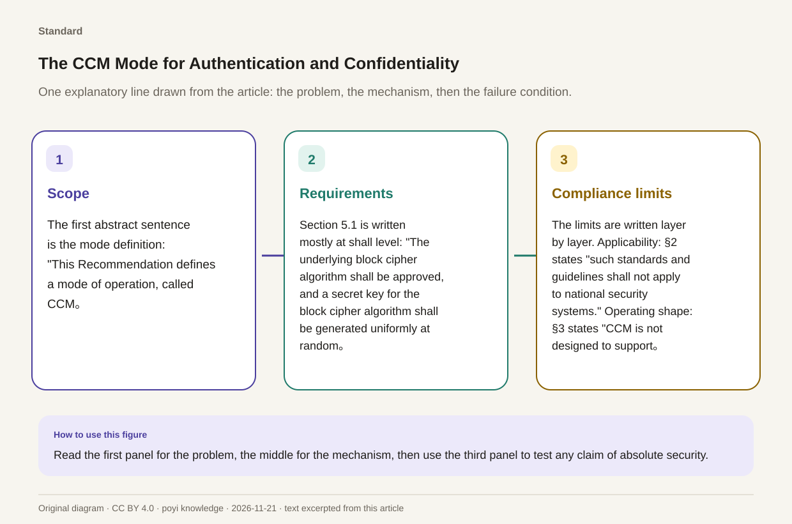
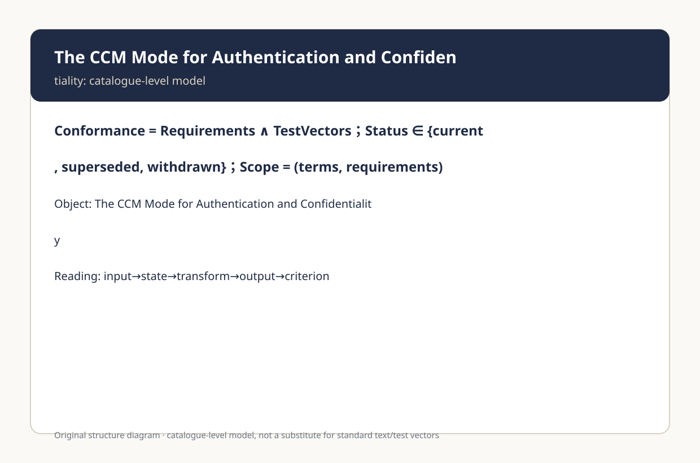

Principles
Standard: The CCM Mode for Authentication and Confidentiality (CCM 认证与保密模式). The first abstract sentence is the mode definition: "This Recommendation defines a mode of operation, called CCM, for a symmetric key block cipher algorithm." The second gives the combination: "CCM may be used to provide assurance of the confidentiality and the authenticity of computer data by combining the techniques of the Counter (CTR) mode and the Cipher Block Chaining-Message Authentication Code (CBC-MAC) algorithm." The keyword line carries both services side by side: "KEY WORDS: authenticated encryption; authentication; block cipher; confidentiality; cryptography; encryption; information security; message authentication code; mode of operation." Clause 1 places the part in the series: "This publication is the third Part in a series of Recommendations regarding modes of operation of symmetric key block cipher algorithms." No new algorithm is proposed: two existing primitives are put into one process, authentication and confidentiality appear together, and neither the origin of the key nor the values a protocol chooses falls inside this specification.

Why it matters
The problem is obtaining confidentiality and authentication in one pass: §3 states "CCM consists of two related processes: generation-encryption and decryption-verification, which combine two cryptographic primitives: counter mode encryption and cipher block chainingbased authentication." and bounds the primitives: "Only the forward cipher function of the block cipher algorithm is used within these primitives." The advantage of the authentication half is put in one sentence: "A MAC provides stronger assurance of authenticity than a checksum or an error detecting code." The burden is stated as a minimum condition: "The security properties of CCM depend, at a minimum, on the secrecy of the key." Together the four sentences give the document position: one key serves both primitives, only the forward cipher function is needed, and key secrecy is the floor.
Applications
Section 5.1 is written mostly at shall level: "The underlying block cipher algorithm shall be approved, and a secret key for the block cipher algorithm shall be generated uniformly at random, or close to uniformly at random" and "The key shall be kept secret and shall only be used for the CCM mode." The same clause sets a hard ceiling on cipher calls: "The total number of invocations of the block cipher algorithm during the lifetime of the key shall be limited to 261." (the printed 261 is this extraction dropping the superscript of 2 to the power 61) Section 5.3 makes the nonce a non-repetition requirement: "The nonce shall be non-repeating in the sense that any two distinct data pairs to be protected by CCM during the lifetime of the key shall be assigned distinct nonces." and adds "The nonce is not required to be random." The wording level is uniform: the algorithm must be approved, the key stays secret and dedicated, the number of calls is capped, uniqueness is required of the nonce while randomness is not, and all five obligations bear on the implementation and its key values rather than on the strength of the primitives themselves.

Limits & attacks
The limits are written layer by layer. Applicability: §2 states "such standards and guidelines shall not apply to national security systems." Operating shape: §3 states "CCM is not designed to support partial processing or stream processing." The cipher choice follows from the block size: §3 gives "thus, CCM cannot be used with the Triple Data Encryption Algorithm". The borrowed primitive is not itself approved: §5.2 states "This Recommendation does not approve CBC-MAC as an authentication mode outside of the context of the CCM specification". Key work is handed elsewhere: §5.1 says "Key establishment and key management are outside the scope of this Recommendation." And the tag length carries a condition: Appendix B.2 states "a value of Tlen that is less than 64 shall not be used without a careful analysis of the risks of accepting inauthentic data as authentic." The six limits sit at different levels: national security systems are outside applicability, whole packets are required, the cipher choice is fixed by the block size, the borrowed CBC-MAC gains no approval of its own, key work belongs to other documents, and a short tag needs a separate risk analysis.
History
The masthead reads "NIST Special Publication 800-38C Recommendation for Block Cipher Modes of Operation: The CCM Mode for Authentication and Confidentiality Morris Dworkin", the part title using Confidentiality rather than Privacy; the date line reads "May 2004 (errata update 07-20-2007; corrected value of parameter B on p.19)", a May 2004 original with an errata update of 20 July 2007. The citation line gives extent and date: "Natl. Inst. Stand. Technol. Spec. Publ. 800-38C 25 pages (May 2004) CODEN: NSPUE2", and this copy contains no DOI line. Appendix A records the pre-standardisation source: "With these functions, this specification of CCM is essentially equivalent to the specification of CCM in the draft amendment [4] to the IEEE Standard 802.11 for wireless local area networks [5]."
Worked example & verification
Formal model and reproduction steps
[S=\min_i S_i,\quad S_i\in{\text{密钥强度},\text{分组安全},\text{实现安全}}]
The CCM Mode for Authentication and Confidentiality: the registered public parameters, key material or randomness, and message are mapped through the stated transformation to an output checked against the registered criterion. The worked example is a structural reproduction, not a new test vector; parameter ranges, standard versions and implementation details remain source-bound.
References
- Wikipedia search entry for CCM 认证与保密模式. https://zh.wikipedia.org/w/index.php?search=CCM%20%E8%AE%A4%E8%AF%81%E4%B8%8E%E4%BF%9D%E5%AF%86%E6%A8%A1%E5%BC%8F
- Handbook of Applied Cryptography (Menezes, van Oorschot, Vanstone). https://www.cacr.math.uwaterloo.ca/hac/